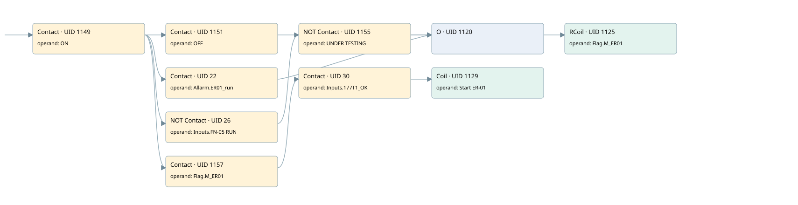

er01
motors 1 · 검색 색인 순서 42 · 원본 내부 NID 추정 41
백업 PLF 원본의 2818300 바이트 위치에서 복원한 XML. 검색 문서 1971의 객체 키 16102200cc11000000000000와 연결했다. 이름 해석 9/9개. 남은 RefId는 상수 또는 미해석 참조다.
연결 구조 다시 그리기
원본 Part/PCon/Wire를 이용한 연결도다. TIA 화면의 래더 배치 또는 실행 결과를 재현한 그림은 아니다. 핀 연결은 아래 표와 원본 XML을 기준으로 읽는다. 노드 위에 마우스를 두면 피연산자 이름을 볼 수 있다.

접점·코일·블록과 피연산자
| Part UID | Gate | Negated 핀 | 연결 피연산자 |
|---|---|---|---|
| 1149 | Contact | operand = ON | |
| 1151 | Contact | operand = OFF | |
| 22 | Contact | operand = Allarm.ER01_run | |
| 26 | Contact | operand | operand = Inputs.FN-05 RUN |
| 1155 | Contact | operand | operand = UNDER TESTING |
| 1120 | O | ||
| 1125 | RCoil | operand = Flag.M_ER01 | |
| 1157 | Contact | operand = Flag.M_ER01 | |
| 30 | Contact | operand = Inputs.177T1_OK | |
| 1129 | Coil | operand = Start ER-01 |
접점 경로를 펼친 조건식
Contact·O/A·비교기의 원본 연결을 읽기 쉽게 펼친 보조 해석이다. POWER는 전원 레일 시작을 뜻한다. 호출 블록·에지·타이머의 내부 동작과 다중 쓰기 순서는 이 표로 실행 검증하지 않았다. 미해석 핀과 RefId는 원문 연결표에서 확인한다.
| UID | 동작 | 대상 | 원본 접점 경로 | 내용 |
|---|---|---|---|---|
| 1125 | RCoil | Flag.M_ER01 | ((ON AND OFF) OR (ON AND Allarm.ER01_run) OR ((ON AND NOT [Inputs.FN-05 RUN]) AND NOT [UNDER TESTING])) | 조건 성립 시 Reset |
| 1129 | Coil | Start ER-01 | ((ON AND Flag.M_ER01) AND Inputs.177T1_OK) | 조건에 따른 Coil 기록 |
원본 배선 연결
| Wire UID | 동일 Wire 연결 끝점 |
|---|---|
| 1159 | Powerrail {} ↔ Part 1149.in |
| 1137 | ORef 1130 (ON) ↔ Part 1149.operand |
| 1150 | Part 1149.out ↔ Part 1151.in ↔ Part 22.in ↔ Part 26.in ↔ Part 1157.in |
| 1138 | ORef 1131 (OFF) ↔ Part 1151.operand |
| 1152 | Part 1151.out ↔ Part 1120.in1 |
| 21 | ORef 23 (Allarm.ER01_run) ↔ Part 22.operand |
| 24 | Part 22.out ↔ Part 1120.in2 |
| 25 | ORef 27 (Inputs.FN-05 RUN) ↔ Part 26.operand |
| 28 | Part 26.out ↔ Part 1155.in |
| 1140 | ORef 1133 (UNDER TESTING) ↔ Part 1155.operand |
| 1156 | Part 1155.out ↔ Part 1120.in3 |
| 1142 | Part 1120.out ↔ Part 1125.in |
| 1144 | ORef 1134 (Flag.M_ER01) ↔ Part 1125.operand |
| 1145 | ORef 1135 (Flag.M_ER01) ↔ Part 1157.operand |
| 1158 | Part 1157.out ↔ Part 30.in |
| 29 | ORef 31 (Inputs.177T1_OK) ↔ Part 30.operand |
| 32 | Part 30.out ↔ Part 1129.in |
| 1147 | ORef 1136 (Start ER-01) ↔ Part 1129.operand |
식별자 해석 근거 9개
| ORef UID | RefId | 이름 | IdentXmlPart 파일 | 해석 방법 |
|---|---|---|---|---|
| 1130 | 1 | ON | 0602-IdentXmlPart.xml | UID/RID + search-text + NID agreement |
| 1131 | 33 | OFF | 0602-IdentXmlPart.xml | UID/RID + search-text + NID agreement |
| 23 | 217 | Allarm.ER01_run | 0604-IdentXmlPart.xml | UID/RID + search-text + NID agreement |
| 27 | 225 | Inputs.FN-05 RUN | 0604-IdentXmlPart.xml | UID/RID + search-text + NID agreement |
| 1133 | 4 | UNDER TESTING | 0602-IdentXmlPart.xml | UID/RID + search-text + NID agreement |
| 1134 | 192 | Flag.M_ER01 | 0604-IdentXmlPart.xml | UID/RID + search-text + NID agreement |
| 1135 | 192 | Flag.M_ER01 | 0604-IdentXmlPart.xml | UID/RID + search-text + NID agreement |
| 31 | 266 | Inputs.177T1_OK | 0604-IdentXmlPart.xml | UID/RID + search-text + NID agreement |
| 1136 | 185 | Start ER-01 | 0602-IdentXmlPart.xml | UID/RID + search-text + NID agreement |
검색 코드 보조 자료
참조 명칭을 찾기 위한 자료이며 실행 순서나 AND/OR 관계는 위 연결표로 확인한다.
"on" "off" "flag".m_er01 "allarm".er01_run "inputs"."fn-05 run" "under testing" "flag".m_er01 "inputs"."177t1_ok" "start er-01"